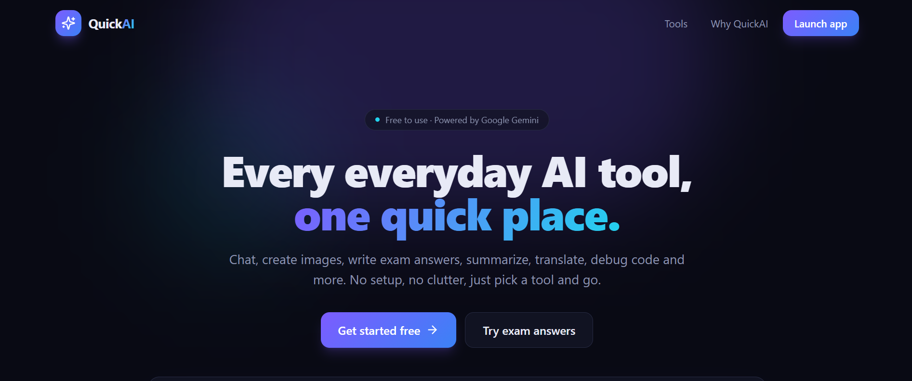

QuickAI
A free website with 12 AI tools in one place, including chat, image generation, exam answers, quizzes, translation and code help, with answers that stream in as they are written and no sign-up needed.
Students and professionals use AI for many small jobs, such as explaining a topic, fixing grammar, translating or planning study time, and each job usually means a different website, a sign-up and a different layout. Free AI services are also limited and can be busy or overloaded when many people use them.
I built a web app that puts 12 AI tools behind one sidebar. Each tool is defined in a single file with its own instructions, so adding a new tool is quick. The server builds every prompt itself, so visitors cannot inject their own instructions. Text tools use the Gemini API and stream the answer word by word. If Gemini is busy, the app retries and switches to backup models automatically. Images are made by a free image service, with Hugging Face as an emergency backup. Rate limits and a short-term cache protect the free quota.
- 12 tools: AI chat, image generator, image Q&A, exam answer writer, quiz and flashcards, summarizer, study planner, paraphraser, translator, writing assistant, code helper, and resume and cover letter
- Streaming answers that appear word by word, with a Stop button and a Generate again button
- Automatic retry and backup models when the main AI model is busy
- Per-visitor and site-wide rate limits plus input checks to protect the free quota
- History, chat memory and recent images saved only in the visitor's own browser, with no accounts
- Dark and light themes, a Ctrl+K search for tools, and a mobile-friendly layout